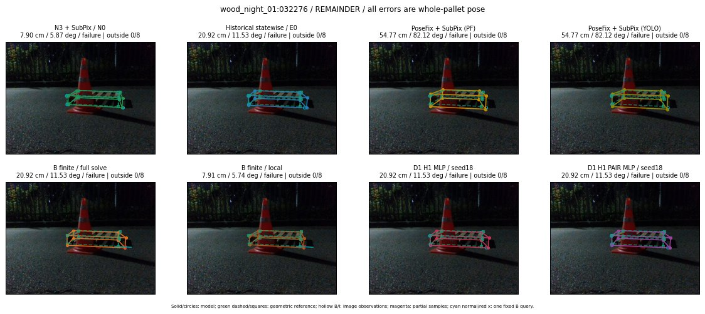

Whole-pallet pose errors; reference is a fixed geometric annotation, not certified physical GT.

Scores are uncalibrated logits. N0 retention is a numerical pose alias; it differs from H0 none or B fallback. B/I and profiles in baseline/B panels are original observations; L panels use new D1 observations. Only one deterministic supported B query is shown in a thumbnail; full support counts are below. Grey privacy rectangles edit the display copy only and are unrelated to O states; all observations were measured on original pixels. Thumbnails use JPEG quality85; detailed scientific panels are PNG.
| Method | Whole pose / cm, deg | Actual source | Selected ID | Score | Archived candidates | Eligible | N0 retained | H0 none | Fallback | Finite profiles |
|---|---|---|---|---|---|---|---|---|---|---|
| Raw YOLO + F | 7.89 cm / 5.47 deg / failure | OTHER | None | N/A | N/A | N/A | False | N/A | None | N/A |
| N3 + SubPix / N0 | 7.90 cm / 5.87 deg / failure | N0 | None | N/A | N/A | N/A | True | N/A | None | N/A |
| Historical statewise / E0 | 20.92 cm / 11.53 deg / failure | E0_REGENERATED | None | N/A | N/A | N/A | False | N/A | False | N/A |
| PoseFix raw | 55.06 cm / 82.40 deg / failure | OTHER | None | N/A | N/A | N/A | False | N/A | None | N/A |
| PoseFix + SubPix (PF) | 54.77 cm / 82.12 deg / failure | OTHER | None | N/A | N/A | N/A | False | N/A | False | historical support records 9; finite audit N/A |
| PoseFix + SubPix (YOLO) | 54.77 cm / 82.12 deg / failure | OTHER | None | N/A | N/A | N/A | False | N/A | False | historical support records 9; finite audit N/A |
| Historical L, seed18 | 7.90 cm / 5.87 deg / failure | N0 | N0 | N/A | 34 | 32 | True | True | True | N/A |
| Historical B fixed bank | 20.92 cm / 11.53 deg / failure | E0_REGENERATED | G10/ORIGINAL_WD/sample/0 | N/A | N/A | N/A | False | N/A | False | N/A |
| Historical B full | 40.48 cm / 8.65 deg / failure | OTHER | NEW/B/ORIGINAL_WD/h1/G10/ORIGINAL_WD/sample/4/PROPOSED_NATIVE_YAW_1 | N/A | N/A | N/A | False | N/A | False | N/A |
| Historical edge full | 61.24 cm / 75.60 deg / failure | OTHER | NEW/edge/SWAPPED_WD/h0/G10/SWAPPED_WD/sample/0/PROPOSED_NATIVE_YAW_0 | N/A | N/A | N/A | False | N/A | False | N/A |
| Historical AB full | 34.92 cm / 14.80 deg / failure | OTHER | NEW/AB/SWAPPED_WD/h1/G10/ORIGINAL_WD/sample/4/PROPOSED_NATIVE_YAW_1 | N/A | N/A | N/A | False | N/A | False | N/A |
| B finite / fixed bank | 20.92 cm / 11.53 deg / failure | E0_REGENERATED | G10/ORIGINAL_WD/sample/0 | N/A | N/A | N/A | False | N/A | False | 18/18 |
| B finite / full solve | 20.92 cm / 11.53 deg / failure | E0_REGENERATED | G10/ORIGINAL_WD/sample/0 | N/A | N/A | N/A | False | N/A | False | 18/18 |
| B finite / local | 7.91 cm / 5.74 deg / failure | OTHER | NEW_FINITE/B/ORIGINAL_WD/h0/N0_LOCAL_SAME_PHYSICAL_POSE/ORIGINAL_WD | N/A | N/A | N/A | False | N/A | False | 18/18 |
| Edge finite / full solve | 20.88 cm / 8.30 deg / failure | OTHER | NEW_FINITE/edge/ORIGINAL_WD/h0/LOGGED/G10/ORIGINAL_WD/outline_consider/7/PROPOSED_NATIVE_YAW_0 | N/A | N/A | N/A | False | N/A | False | 18/18 |
| D0 H0 MLP / seed18 | 7.90 cm / 5.87 deg / failure | N0 | N0 | 2.4361538887023926 | 13 | 11 | True | True | True | N/A |
| D0 H0 MLP / seed19 | 7.90 cm / 5.87 deg / failure | N0 | N0 | 2.9422483444213867 | 13 | 11 | True | True | True | N/A |
| D0 H0 MLP / seed20 | 7.90 cm / 5.87 deg / failure | N0 | N0 | -0.13544726371765137 | 13 | 11 | True | True | True | N/A |
| D0 H1 MLP / seed18 | 20.92 cm / 11.53 deg / failure | E0_REGENERATED | E0_REGENERATED | -1.6872053146362305 | 13 | 11 | False | False | False | N/A |
| D0 H1 MLP / seed19 | 20.92 cm / 11.53 deg / failure | E0_REGENERATED | E0_REGENERATED | -2.5943217277526855 | 13 | 11 | False | False | False | N/A |
| D0 H1 MLP / seed20 | 20.92 cm / 11.53 deg / failure | E0_REGENERATED | E0_REGENERATED | -2.9145309925079346 | 13 | 11 | False | False | False | N/A |
| D1 H0 MLP / seed18 | 7.90 cm / 5.87 deg / failure | N0 | N0 | 6.009130954742432 | 13 | 11 | True | True | True | N/A |
| D1 H0 MLP / seed19 | 7.90 cm / 5.87 deg / failure | N0 | N0 | 6.148772716522217 | 13 | 11 | True | True | True | N/A |
| D1 H0 MLP / seed20 | 7.90 cm / 5.87 deg / failure | N0 | N0 | 5.6571478843688965 | 13 | 11 | True | True | True | N/A |
| D1 H1 MLP / seed18 | 20.92 cm / 11.53 deg / failure | E0_REGENERATED | E0_REGENERATED | -1.2254998683929443 | 13 | 11 | False | False | False | N/A |
| D1 H1 MLP / seed19 | 20.92 cm / 11.53 deg / failure | E0_REGENERATED | E0_REGENERATED | -1.0982465744018555 | 13 | 11 | False | False | False | N/A |
| D1 H1 MLP / seed20 | 20.92 cm / 11.53 deg / failure | E0_REGENERATED | E0_REGENERATED | -2.012983560562134 | 13 | 11 | False | False | False | N/A |
| D1 H1 ROLE AFFINE / seed18 | 7.90 cm / 5.87 deg / failure | N0 | N0 | -0.2754376530647278 | 13 | 11 | True | False | False | N/A |
| D1 H1 ROLE AFFINE / seed19 | 7.90 cm / 5.87 deg / failure | N0 | N0 | 0.0029493533074855804 | 13 | 11 | True | False | False | N/A |
| D1 H1 ROLE AFFINE / seed20 | 7.90 cm / 5.87 deg / failure | N0 | N0 | -0.22688494622707367 | 13 | 11 | True | False | False | N/A |
| D1 H1 PAIR MLP / seed18 | 20.92 cm / 11.53 deg / failure | E0_REGENERATED | E0_REGENERATED | -1.4781619310379028 | 13 | 2 | False | False | False | N/A |
| D1 H1 PAIR MLP / seed19 | 20.92 cm / 11.53 deg / failure | E0_REGENERATED | E0_REGENERATED | -1.8142491579055786 | 13 | 2 | False | False | False | N/A |
| D1 H1 PAIR MLP / seed20 | 20.92 cm / 11.53 deg / failure | E0_REGENERATED | E0_REGENERATED | -2.2646923065185547 | 13 | 2 | False | False | False | N/A |
| D1 H1 PAIR ROLE AFFINE / seed18 | 20.92 cm / 11.53 deg / failure | E0_REGENERATED | E0_REGENERATED | -0.621630072593689 | 13 | 2 | False | False | False | N/A |
| D1 H1 PAIR ROLE AFFINE / seed19 | 20.92 cm / 11.53 deg / failure | E0_REGENERATED | E0_REGENERATED | -0.9674827456474304 | 13 | 2 | False | False | False | N/A |
| D1 H1 PAIR ROLE AFFINE / seed20 | 20.92 cm / 11.53 deg / failure | E0_REGENERATED | E0_REGENERATED | -0.6820002198219299 | 13 | 2 | False | False | False | N/A |
| Regenerated common E0 | 20.92 cm / 11.53 deg / failure | E0_REGENERATED | E0_REGENERATED | N/A | N/A | N/A | False | N/A | False | N/A |